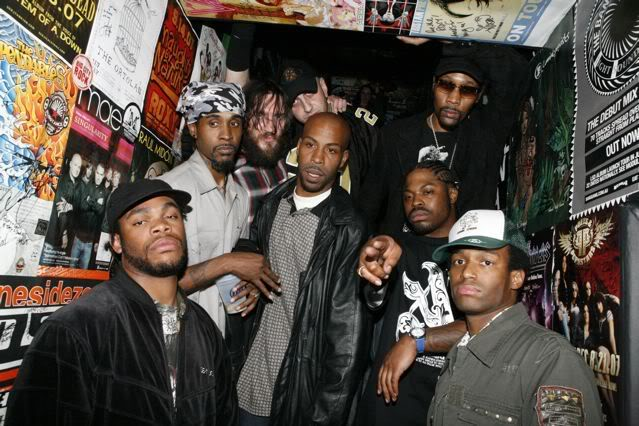
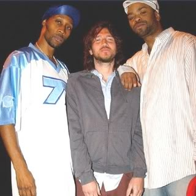

Jak zapewne wszyscy wiemy, John Frusciante jest artystą nadzwyczaj otwartym na wiele gatunków muzycznych. Często zaskakiwał swoich fanów i podejrzewam, że jeszcze nie raz zaskoczy, bo jego kreatywność wydawała się zawsze nieskończona, a umysł otwarty na nowe pomysły, nowe kolaboracje. I chociaż wielu miłośników jego muzyki wolałaby aby ten nieprzeciętny gitarzysta zatrzymał się na poziomie takich płyt jak „The Empyrean”, albo nagrywał to samo, co robił przez wiele lat w Red Hot Chili Peppers (ba, najlepiej byłoby nawet, gdyby wrócił on do zespołu), Johnny nic sobie z tego nie robi i idzie dalej obraną przez siebie drogą. Wiąże się to oczywiście z pewnymi kontrowersjami, jakich dostarczył chociażby ostatni album Frusciantego – „PBX Funicular Intaglio Zone” i poprzedzająca te wydawnictwo Epka „Letur-Lefr”. Oba krążki oparte przede wszystkim na elektronicznym brzmieniu, wniosły do twórczości muzyka elementy takich gatunków jak acid house, drum’n'bass, synth-pop, a nawet hip-hop. Właśnie na tym ostatnim chciałbym się skupić.
„Nie lubię dzielić muzyki na gatunki, lubię, kiedy słyszę ducha muzyki” – mówi sam Frusciante – „Przechodzę różne fazy – generalnie jestem bardzo otwarty na muzykę. Lubię wszystkie style, nie dzielę muzyki w ten sposób”. I chociaż wielu muzyków deklaruje taką otwartość, doskonale wiemy, że Frusciante oprócz tworzenia muzyki, jest też wiernym słuchaczem. Warto wspomnieć, że w czasie trasy promującej „Californication”, podczas gdy reszta zespołu balowała i używała życia, John biegał po miejscowych sklepach muzycznych, wydając mnóstwo pieniędzy na płyty. Ale wracając do tematu dzisiejszego artykułu… Fru nie raz, nie dwa udowadniał, że jego inspiracje mogą sięgać nawet hip-hopu. Nie mówię już nawet o akompaniamencie do zwariowanych zwrotek Anthony’ego Kiedisa w wielu numerach Red Hotów, ale o występowaniu u boku największych gwiazd rapu.
Pierwsza, choć może symboliczna, styczność z kulturą hip-hopową w solowej karierze Frusciante pojawia się już w 2001 roku, na albumie „To Record Only Water For Ten Days”. Zaskoczeni? Fakt, nikt na tej płycie nie rapuje, ale instrumentalna miniatura „Murderers” okrzyknięta została jednym z hymnów skateboardingu. Dowiedziałem się o tym przypadkiem, nie znając jeszcze tej płyty, od znajomego, który jeździ na desce i postanowiłem to sprawdzić. Faktycznie, oprócz sławnego już „Invisible Boards”, jest na youtube wiele amatorskich filmików skaterów, w których możemy usłyszeć właśnie ten utwór.
Jeśli mówić o hip-hopie w życiu Johna, trzeba wspomnieć o jednej bardzo ważnej osobie – raperze, producencie i założycielu kultowego Wu-Tang Clan, twórcy muzyki do takich filmów jak „Ghost Dog”. Robert Diggs, znany szerzej jako RZA odegrał ważną rolę w twórczości Frusciante. Panowie nie tylko się przyjaźnią, ale też kilkukrotnie spotkali się razem w studio, by połączyć swoje siły. Mało tego, fragment niepublikowanego wcześniej utworu gitarzysty, pojawił się w zeszłym roku w filmie rapera, pt. „Człowiek o Żelaznych Pięściach”. „Foregrow”, bo zwie się ten kawałek, niestety nie pojawił się na oficjalnym soundtracku, a sam film polecam tylko fanom Quentina Tarantino i fanatykom twórczości RZA, chociaż ja się całkiem nieźle ubawiłem.

Trzeba przyznać, że muzyka Wu-Tang Clan wywarła na muzyku ogromne wrażenie. Może to pewna przesada, ale zaryzykuję stwierdzenie, że gdyby nie oni, nie moglibyśmy dziś słuchać jednego z szlagierowych kawałków RHCP, czyli „Dani California”. Singiel początkowo nosił roboczą nazwę… właśnie „Wu-Tang”. Fruciante zafascynowany debiutancką płytą zespołu, zaczął pewnego wieczoru improwizować pod perkusyjny beat zastosowany w jednym z utworów. Zainspirowany podziałem rytmicznym i sposobem rapowania członków Wu-Tangu stworzył klasyczny riff, który grany dziś na koncertach powoduje ekstazę wśród publiczności. Co do powiedzenia ma sam Frusciante?
„Byłem chory na punkcie pierwszego albumu Wu Tang – „Enter the 36 Chambers”. Prawie codziennie podczas pisania nowych utworów inspirowałem się, szczególnie inspirowałem się rozmieszczeniem rymów i pustek używanych w rapie. One mnie inspirowały i wpływały na mój styl grania pewnych partii na gitarze. Naprawdę natchnieniem dla mnie byli: GZA, Method Man, Reakwon i inni. Oni nie wychodzili po prostu na ulice z „błądzącą” perkusją, oni kreowali dźwięki, tworzyli swoje własny groove w muzyce . Naprawdę żyłem tymi pomysłami rytmicznego wyrażania muzyki. Jednej nocy, gdy pozostałem sam i zajmowałem się codziennymi sprawami, dałem się ponieść grze, jakbym był basistą lub gitarzystą w tym utworze, pozwoliłem moim myślom odpłynąć, miałem tę moc, jaką miała perkusja, każdą przestrzeń kreowałem na to, co czuje, aby być zgodnym z rytmem perkusji. Pochodziło to z miejsca, z którego pochodzi harmonia. Nawet jeśli niektóre dźwięki są dodane po to, by włożyć coś więcej w podstawowe brzmienie perkusji, co ma miejsce równiez na pierwszym albumie Wu Tang, jak ‚bum bum chi, bum bum bum chi, bum bum chi, bum bum bum chi’. Za każdym razem, gdy coś takiego się pojawia, czuję, że nie jest aż tak różne od np. „Sweet home Alabama” lub czegoś podobnego.”
Mniej więcej w tym samym czasie RZA (razem z Shavo Odadijanem z System of a Down i kilkoma kolegami) założył projekt Achozen. Miało to być połączenie hip-hopu z rockowym brzmieniem, ale też funkiem i innymi gatunkami. „Achozen to muzyczna rewolucja. To nie tylko kapela, to sposób myślenia”, mogliśmy przeczytać na stronie projektu, choć żadnego potwierdzenia tych słów (oprócz dwóch niezłych, ale tylko niezłych singli) nie otrzymaliśmy. Grupa planowała wydać album, z tym że każdą przewidzianą datę premiery przesuwała, a płyta nie wyszła do dziś. Co ciekawe, wśród muzyków mieli się pojawić (znany dobrze fanom RHCP) George Clinton, rzecz jasna Frusciante i wiele innych sławnych muzyków. Oby nie okazało się, że ten materiał wyląduje w szufladzie… Co istotne, oprócz udziału na płycie projektu, Frusciante pojawił się z grupą na scenie, podczas koncertu w kwietniu 2008 roku w klubie Roxy.

Drogi Johna i Diggsa nie rozchodziły się ani na krok. Grudzień 2007 roku przynosi nam nowy album Wu-Tangu. Płyta „8 Diagrams” , wydana po 6 latach od poprzedniczki, była kolejnym pretekstem do artystycznego spotkania tych dwóch muzyków. Frusciante pojawia się w dwóch utworach – „Unpredictable” oraz „The Heart Gently Weeps”, który jest adaptacją utworu „While My Guitar Gently Weeps” Geaorge’a Harrisona. W tej wersji oprócz Johna, pojawia się też Erykah Badu i syn słynnego Beatlesa, Dhani Harrison.
Niecały rok później Fru znowu pomaga raperowi, tym razem na jego solowej płycie „Digi Snacks”. W „Up Again”, utworze który John współprodukował, pojawia się jego charakterystyczna gitara, jednak wkomponowana dyskretnie w beat. Z kolei w roku 2009 na sklepowych półkach ukazuje się debiutancki album duetu N.A.S.A. Na „The Spirit of Apollo” pojawiło się mnóstwo gwiazd światowego formatu, związanych z rapem, rockiem i funkiem. Wszystkich nie sposób wymienić, ale usłyszymy tu prawie całą ekipę Wu-Tang Clan, Chucka D z Public Enemies, Lykke Li, wspomnianego już wcześniej Georga Clintona, a nawet Toma Waitsa. Z krążkiem warto się zaznajomić, nawet jeśli nie jest się zagorzałym fanem hip-hopu. Ta płyta od początku do końca przenosi pozytywne wibracje, a dzięki takiej ilości gościnnych występów nie jest w stanie się znudzić. Jednym z ciekawszych momentów na płycie jest „Way Down” w którym brzdęka gitara Fru (ale w refrenie usłyszycie też jego chórki!), śpiewa Barbie Hatch a rapuje… żadna niespodzianka. Oczywiście RZA. Całość dopina wspaniały, lekki podkład i warty obejrzenia klip.
Później nastąpiła wielka cisza. Dzisiaj wiemy, że Frusciante odszedł z Red Hot Chili Peppers i zaszył się w swoim domu zgłębiając tajniki muzyki elektronicznej. W międzyczasie nagrał mnóstwo muzyki, której prawdopodobnie nigdy nie będzie nam dane usłyszeć. Jedyne co wiemy o tym okresie, to wszystko co sam Frusciante opisał na swojej stronie internetowej .
W międzyczasie wyciekła jednak informacja o współpracy z RZA i niejaką Truth Hurt, wokalistką R&B. Truth tak wspomina spotkanie z muzykiem:
„On właśnie wprowadza swój nowy projekt. Śpiewałam w tym projekcie dla niego, a teraz dostanę od niego nagranie dla mojego projektu. Nigdy nie możesz mieć pewności z Johnem. On może to wypuścić, może tego nie zrobić. Jego sprawą jest, by nigdy więcej nie tworzyć muzyki dla ludzi. Nie musi. Jednak utwór, który razem stworzyliśmy, jest świetny. W jego domu rozluźnialiśmy się słuchając pewnego projektu, który stworzył, a którego nigdy nie wydał. To jest ten utwór, podczas którego czułam się, jak : ‚Człowieku, proszę pozwól mi się tego podjąć, bo ten utwór jest szalony!’ On jest szalony na gitarze, jak nikt inny w tym biznesie. Wtedy powiedziałam: ‚Proszę daj mi to!’ [śmiech] Nikt tego nie słyszał. To szalone. On na to: ‚To zostanie w archiwach’. Ja na to: ‚Nie ma mowy, Nie ma mowy!’”
W lipcu zeszłego roku w końcu doczekaliśmy się nowego wydawnictwa od Johna. Mało tego, EP „Letur-Lefr” miało zwiastować długogrający album „PBX Funicular Intaglio Zone”. Dziwne nazwy, dziwna też muzyka. Na obu krążkach słyszymy eksperymentalne, elektroniczne tracki z połamanymi rytmami, tajemniczymi efektami wydającymi się niezbyt uporządkowanymi elementami szalonej układanki. Niezależnie od tego, czy ta muzyka się komuś podoba, czy nie (osobiście jestem zwolennikiem) Fru znowu uciekł przed powtarzaniem się. Na obu tych albumach pojawiają się odniesienia do muzyki hip-hopowej. Na „Letur-Lefr” jest ich nawet całkiem sporo, bo pojawiają się w aż trzech z pięciu kawałków. Najbardziej wyrazistym przykładem jest „FM”, w którym John zostawia raperom ogromne pole do popisu, tworząc bardzo chwytliwy beat. Na „PBX” rap pojawia się tylko w jednym numerze („Ratiug”), który muzycznie najbardziej przypomina jednak dawne dokonania muzyka.
Czy możemy liczyć w najbliższej przyszłości na kolejne płyty Johna, albo gościnne występy na płytach innych artystów? Latem ma ukazać się nowy album Wu-Tang Clan, jest zatem cień szansy, że RZA po raz kolejny zaprosi gitarzystę. Kto wie? Może kiedyś Panowie odważą się na wspólny album? Może John udostępni nagrania, które stworzył w 2010 roku? Jedno jest pewne – jest to na tyle nieprzewidywalny muzyk, że jeszcze pewnie wiele zaskoczeń przed nami. Jego nową wizję tworzenia muzyki najlepiej opiszą chyba słowa RZA:
„W branży muzycznej mam przyjaciela, który dał mi wielką lekcję muzyki. Nazywa się John Frusciante, jest z Chili Peppers. Powiedział mi, że nie będzie już nigdy więcej tworzył muzyki
dla zysku lub dla ludzi, tylko po to, by się wyrazić. Miłość czy nienawiść – on nie dba o krytykę. Jest zabezpieczony finansowo na tyle, aby nie musiał nigdy więcej sprzedawać muzyki.
Nie mam tego samego zabezpieczenia, ponieważ mam wielu członków w rodzinie. I nigdy nie będę dość bogaty.
Jestem w domu Johna po to, by tworzyć z nim muzykę. My po prostu tworzymy muzykę. Stworzyłem 100 utworów w tym roku i chyba nikt ich nie usłyszy, ale udało się. To dobrze. Czuję
się dobrze, ponieważ robię to bez presji. Nie martwiąc się, że ktoś będzie krytykował moja pracę, jak byłoby, gdybym oddał to do sprzedaży. To jest przeszłość. Teraz jestem w świetnym miejscu.”

Ps. Ogromne podziękowania dla Patrycji, która pomogła mi przy tłumaczeniu kilku wypowiedzi, użytych w tym artykule.